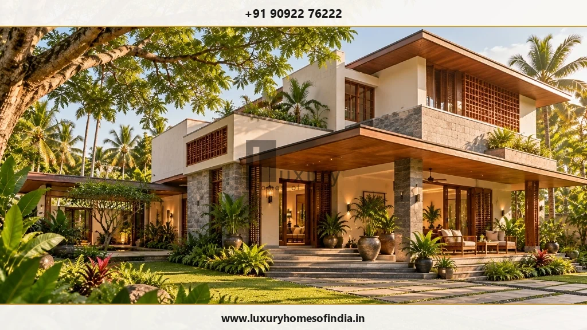
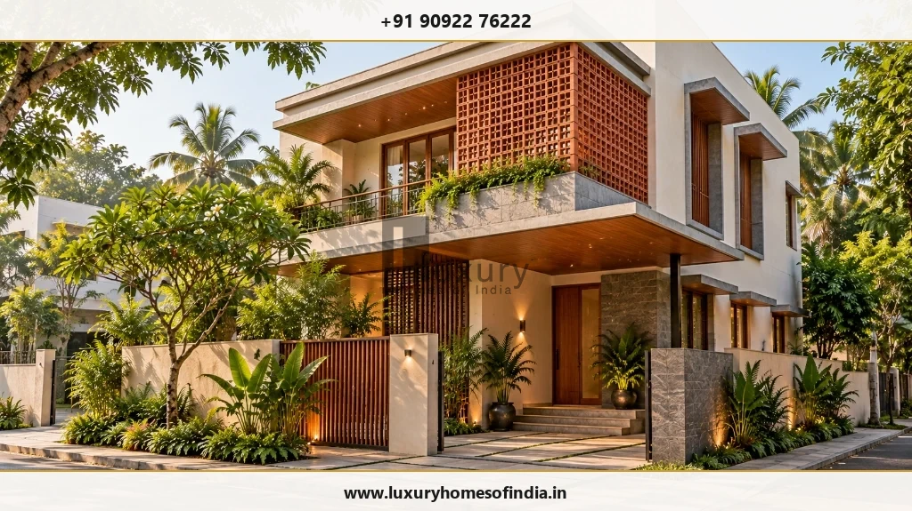
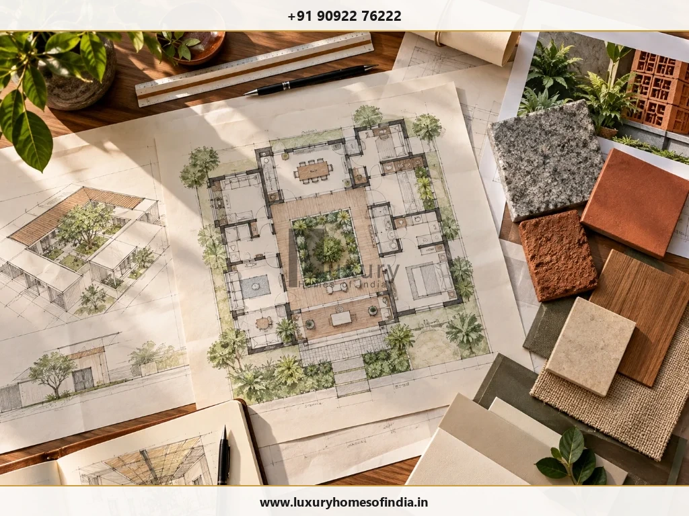

What Does End-to-End Home Construction Include?
A coordinated roadmap from initial brief and architectural planning to civil execution and final handover.
Executive Summary
End-to-end home construction is a coordinated delivery process covering site assessment, architectural planning, structural engineering, turnkey execution, building services, and handover. However, it does not mean every item is included by default. The exact scope—such as statutory approvals, interior fit-outs, and external landscaping—must be explicitly defined in your written agreement.

Understanding End-to-End Residential Scope in Chennai
End-to-end home construction describes a unified, coordinated approach to the agreed stages of designing and building a luxury residence. Rather than managing separate architects, structural engineers, civil contractors, and MEP teams yourself, an end-to-end provider coordinates these disciplines within a singular workflow.
However, the label "end-to-end" alone does not automatically mean every professional service, luxury product, or external site feature is included in a single contract. Depending on your specific agreement with Luxury Homes of India (LHI), the construction scope typically encompasses:
- Requirement Mapping: In-depth lifestyle, space planning, and site requirement analysis.
- Architectural Design: Concept layout, elevation design, daylighting, and spatial planning.
- Structural Engineering: Soil investigation, foundation design, and RCC framing.
- Civil Construction: Substructure, masonry, waterproofing, and structural execution.
- Building Services (MEP): Electrical conduits, sanitary piping, plumbing lines, and HVAC ducting.
- Interior Finishes: Flooring, wall finishes, joinery, modular kitchens, and custom woodwork (where contracted).
- Automation & Security: Smart-home conduits, CCTV infrastructure, and automated access systems.
- Site Handover: Quality testing, snag rectifications, warranties, and completion documentation.
Before work commences, establish which responsibilities belong to your builder, which remain with the homeowner, and which require separate municipal authorities, structural consultants, or specialist vendors. A clear, itemized scope of work is far more valuable than relying on marketing terms.
Start With a Home That Suits Your Life
A successful architectural brief begins with how your household intends to use spaces every day, rather than starting with superficial façade aesthetics or luxury finishes. Consider daily routines, acoustic privacy, storage volumes, entertaining spaces, work-from-home requirements, and multi-generational living needs.
During initial project discussions, review the following key layout requirements with your design team:
- Living & Dining Flow: Distinction between formal guest reception areas and private family retreats.
- Kitchen Workflow: Dry and wet kitchens, utility zones, pantry storage, and ventilation exhausts.
- Parental & Guest Suites: Ground-floor bedrooms with non-slip flooring and step-free bathroom access.
- Workspaces & Study Rooms: Dedicated quiet zones equipped with high-speed network cabling.
- Parking & Entry Logistics: Covered car parks, driver amenities, and secure entry foyers.
- Indoor-Outdoor Integration: Private courtyards, verandahs, and landscaped light wells tailored to Chennai's tropical climate.
- Vastu Compliance: Room orientations, entry alignments, and water feature placement, if relevant.
- Future Adaptability: Provision for home elevators, solar power systems, and battery storage.
A well-defined brief provides clear rationale for architectural choices, guiding structural engineering, material procurement, and cost management in subsequent stages. Explore our guide on luxury home planning in Chennai for deeper spatial strategies.

The Six Stages of Your Home Construction Journey
Building a custom residence requires a systematic sequence of design and execution milestones. Here is how LHI structures the end-to-end residential journey:
1. Architectural Planning & Concept Design
Develop the floor plan, spatial layout, and exterior architecture based on your plot dimensions and lifestyle brief. Review circulation paths, solar orientation, natural cross-ventilation, and visual privacy. Agree on design deliverables, 3D visualization stages, and revision limits before moving forward.
2. Structural Engineering & Site Preparation
Integrate architectural drawings with site-specific engineering requirements. Foundation types (such as pile foundations or raft footings) are selected based on geotechnical soil testing. Structural calculations are verified to ensure earthquake resistance and long-term durability.
3. Scope & Specification Development
Translate approved drawings into a comprehensive Bill of Quantities (BOQ). Define exact material specifications (e.g., Fe-550D TMT steel, OPC/PPC cement grade, Italian marble vs. vitrified tile allowances), work packages, and explicit exclusions. Clarify approval protocols for material variations.
4. Civil Construction Execution
Execute civil masonry, reinforced concrete framing, waterproofing, and structural work according to approved engineering drawings. Establish clear project schedules, quality checkpoints, site communication channels, and formal change-request procedures for design tweaks.
5. Building Services, Interiors & Automation
Coordinate electrical wiring, plumbing networks, sanitaryware, false ceilings, flooring, joinery, modular kitchens, and smart home technology. Verify the precise extent of interior execution in your contract, as interior fit-outs are often separate from shell-and-core construction packages. See our breakdown on luxury home interior design in Chennai.
6. Testing, Snagging & Handover
Conduct multi-point quality inspections, hydrostatic plumbing tests, electrical load checks, and waterproofing flood tests. Compile a formal snagging list to rectify minor paint or fitting defects before issuing completion documentation, keys, and warranty certificates.
Know What You Need to Approve—and When
Even with an end-to-end construction team managing daily site operations, homeowner decisions remain critical at every milestone. Delayed material selections or late architectural changes after procurement can lead to budget variations and schedule delays.
| Project Stage | Typical Homeowner Decision Deliverables |
|---|---|
| Initial Brief | Spatial requirements, lifestyle priorities, total built-up area targets, and overall budget parameters. |
| Design Development | Approval of floor plans, 3D elevations, structural layouts, Vastu alignments, and room dimensions. |
| Specification Phase | Selection of material grades, window systems, sanitaryware brands, electrical fittings, and prime cost allowances. |
| Procurement Phase | Final approval of stone slabs, veneer samples, tile batches, hardware finishes, and approved vendor substitutions. |
| Construction Phase | Sign-off on site mock-ups, electrical switch points, niche locations, and formally documented variation orders. |
| Handover Phase | Joint inspection of snagging lists, review of system operation manuals, and formal acceptance of deliverables. |

Planning for Your Specific Chennai Site
Every plot requires a customized architectural and structural response based on its location, soil bearing capacity, solar orientation, and local microclimate.
- Orientation & Solar Heat Gain: In Chennai’s tropical climate, South and West facades absorb heavy heat. Incorporating deep overhangs, louvers, terracotta jaali screens, and low-E double glazing reduces indoor temperatures and air conditioning loads.
- Water Management & Waterproofing: Heavy monsoon downpours require specialized roof slope design, high-capacity rainwater downpipes, multi-layer terrace waterproofing, and subterranean sump tanks.
- Coastal Exposure & Anti-Corrosion: Properties near East Coast Road (ECR) or Besant Nagar face saline air. Structural steel must feature proper concrete cover, SS-316 grade external hardware, and marine-grade protective coatings.
- Statutory Approvals & Setbacks: Compliance with CMDA building regulations and Greater Chennai Corporation rules regarding plot coverage, FSI, and road setbacks must be verified before breaking ground.
Understand Full Project Cost Before Committing
A transparent construction proposal breaks down costs far beyond a simple per-square-foot baseline. Before accepting a construction contract, ensure your estimate clarifies:
- Architectural and structural engineering fees.
- Civil substructure and superstructure work scopes.
- Plumbing, electrical, and HVAC ducting allowances.
- Specific material grades (cement, steel, sand, stone).
- Statutory submission fees and municipal connection deposits.
- Milestone-based payment schedules tied to verifiable site completion.
For a detailed breakdown of per-square-foot construction calculations, review our guide on luxury villa construction costs in Chennai.
Discuss Your Complete Home Project With LHI
Bring your plot details, lifestyle vision, or architectural sketches to our Chennai design center. Our senior engineering team will help map out your scope, structural requirements, and itemized budget estimate.
Call +91 90922 76222 Request Proposal